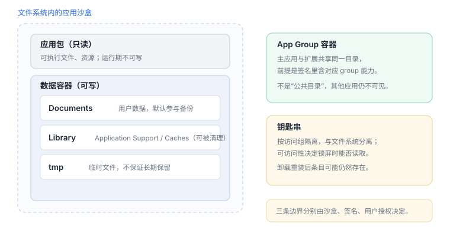
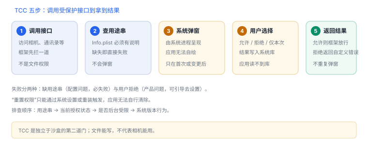

沙盒与权限边界
沙盒管“能碰哪些路径”，能力管“能用哪些接口”，用户管“能不能碰这类数据”
三条边界经常被混为一谈：沙盒限制文件与 IPC 访问，entitlement 声明系统能力，用户授权决定隐私数据能否使用。排查时先判断是哪一条拒绝的，能省掉一半时间。
1. 三条边界
| 边界 | 由谁决定 | 生效时机 | 拒绝表现 |
|---|---|---|---|
| 沙盒 | 系统在进程创建时施加 | 进程生命周期 | 路径访问失败、无法连接服务 |
| entitlement | 签名与描述文件 | 启动时校验 | 能力不可用或返回权限错误 |
| 用户授权 | 用户 | 首次请求后长期保存 | 返回“未授权/受限”，不弹窗 |

2. 容器布局
| 路径 | 可写 | 备份 | 用途 |
|---|---|---|---|
YourApp.app | 否 | 随包 | 可执行文件与资源 |
Documents/ | 是 | 是 | 用户数据 |
Library/Application Support/ | 是 | 是 | 应用状态，可排除备份 |
Library/Caches/ | 是 | 否 | 可重建缓存 |
tmp/ | 是 | 否 | 临时文件 |
包内目录在运行期不可写，所以任何“下载资源到应用目录”的方案都落在数据容器里；缓存目录可能被系统清理，不能当唯一数据源。
3. 原理推演：容器路径为什么带 UUID
容器是“安装实例”的产物，不是应用的固定属性：重装、恢复、多开都会生成新实例。如果路径固定，旧实例留下的文件可能被新实例读到，或者被其他进程按名字猜到。
加上 UUID 后，路径本身成为一次性凭据：旧路径失效、新实例无法误读，备份与迁移也能识别“这是哪一次安装”。这也是“把容器路径硬编码进代码”必然在下次安装后失效的原因——不是权限问题，是路径本身已经不存在。
4. 沙盒之外的通道
| 通道 | 访问条件 | 注意 |
|---|---|---|
| App Group 容器 | 签名含对应 group 能力 | 主应用与扩展共享，其他应用仍不可见 |
| 钥匙串 | 访问组匹配 | 与文件系统分离，卸载后可能保留 |
| 用户选择的文件 | 用户通过选择器授权 | 拿到的是安全作用域书签，需显式开启访问 |
| 系统服务 | 持有端口或通过框架调用 | 能力仍由服务端校验 |

5. 模拟器观测
定位容器并查看目录
xcrun simctl get_app_container booted com.example.app data
ls -la "$(xcrun simctl get_app_container booted com.example.app data)"
du -sh "$(xcrun simctl get_app_container booted com.example.app data)/Library/Caches"真机无法直接读容器路径；可让应用把关键路径与文件大小写进日志，或用调试构建导出。
6. 四种 errno：先分清是谁拒绝的
| 错误 | 含义 | 先查 |
|---|---|---|
ENOENT | 路径不存在 | 目录是否创建、容器是否被清理 |
EACCES | 权限不足 | 沙盒边界、App Group 能力 |
EPERM | 策略拒绝 | 文件保护类、设备锁定状态 |
ENOSPC | 空间不足 | 缓存是否无上限增长 |
三种“拒绝”不要混
EPERM 是策略（锁屏/保护类），EACCES 是沙盒或能力，用户拒绝隐私权限则通常不返回文件错误，而是框架给“未授权”状态。7. 失败分流
| 现象 | 原因 | 查哪里 |
|---|---|---|
| 前台正常、后台失败 | 保护类要求解锁 | 保护类与读取时机 |
| 写文件成功但重启丢失 | 写在 tmp 或缓存 | 目录选择 |
| 扩展读不到共享数据 | group 能力或路径不一致 | 签名能力与容器 URL |
| 换机后数据没了 | 排除备份或仅本机语义 | 备份策略 |
延伸：K04 文件系统与容器 · 17 代码签名 · 04 注入与越狱检测
8. 数据细节：三条边界的判定顺序
| 顺序 | 检查 | 失败表现 |
|---|---|---|
| 1 | 能力是否在签名里 | 能力不可用，启动时即失败 |
| 2 | 路径是否在沙盒允许范围 | EACCES |
| 3 | 文件保护类是否允许读取 | EPERM |
| 4 | 用户是否授权隐私数据 | 框架返回“未授权”，非文件错误 |
9. 一次真实排查记录：扩展读不到共享数据
- 现象：主应用能读到文件，扩展读不到。
- 先查能力：扩展的签名是否包含同一个 group。
- 再查路径：两边是否都通过容器 URL 取路径，而不是硬编码。
- 验证：打印两边的容器路径，比较前缀是否一致。
- 结论与限制：记录“group 能力或路径不一致”，并注明结论只对该构建有效。
10. 自测
- 沙盒、entitlement、用户授权各自拒绝什么？
- 为什么扩展与主应用共享数据必须走 App Group？
EPERM与EACCES分别对应哪种边界？- 缓存目录为什么不能作为唯一数据源？